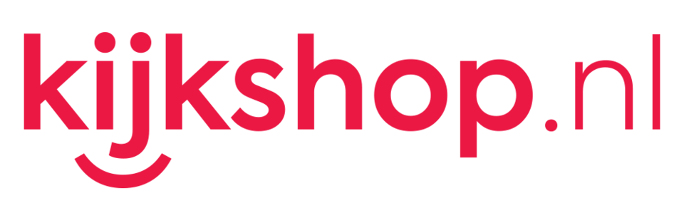

홈 > 브랜드 매거진 > Perekryostok
Perekryostok
페레크료스토크(Perekrestok)는 1994년 모스크바에서 시작된 X5 그룹 산하의 러시아 슈퍼마켓 체인이다.
산업 분야 리테일·커머스 · 공개 등급 자료 기반 · 브랜드 평가 4.1 ★

한눈에 보는 브랜드
페레크료스토크(Perekrestok)는 1994년 모스크바에 첫 매장을 열고 2002년부터 확장했다. 2006년 퍄테로치카와 합병해 X5 리테일 그룹을 구성했으며 X5 내에서 표준 슈퍼마켓 포맷을 담당한다.
브랜드 관점
Perekryostok 항목은 단순한 이름 목록이 아니라 리테일·커머스 시장 안에서 어떤 역할을 하는지 읽기 위한 기준점입니다. 제품·서비스 범위, 유통 방식, 시각 아이덴티티, 시장 포지션을 함께 비교하면 같은 산업의 다른 브랜드와 차이가 선명해집니다.
시작과 성장
1994년 러시아에서 시작된 X5 그룹 산하의 슈퍼마켓 체인이다.
브랜드 아이덴티티
X5 그룹의 표준형 슈퍼마켓 포맷을 대표하는 브랜드다.
제품과 서비스
Perekryostok의 제품과 서비스는 리테일·커머스 범주에서 해석됩니다. 이 섹션은 상품군, 서비스 방식, 판매 채널, 사용 장면을 분리해 추적하기 위한 기본 설명이며, 추가 자료가 확보되면 대표 제품과 가격대, 시장별 차이까지 확장할 수 있습니다.
현재 상태
타임라인
정리된 연도형 이벤트가 없습니다.
BI/CI 변천사
함께 읽을 브랜드
 리테일·커머스 · 자료 기반BCC
리테일·커머스 · 자료 기반BCCBCC는 네덜란드의 리테일·커머스 브랜드로, 상품 큐레이션, 가격 체계, 매장·온라인 유통, 구매 편의성이 브랜드 인식을 좌우하는 영역입니다.
 리테일·커머스 · 자료 기반BelCompany
리테일·커머스 · 자료 기반BelCompanyBelCompany는 리테일·커머스 브랜드로, 상품 큐레이션, 가격 체계, 매장·온라인 유통, 구매 편의성이 브랜드 인식을 좌우하는 영역입니다.
 리테일·커머스 · 자료 기반Extra
리테일·커머스 · 자료 기반ExtraExtra는 독일의 리테일·커머스 브랜드로, 상품 큐레이션, 가격 체계, 매장·온라인 유통, 구매 편의성이 브랜드 인식을 좌우하는 영역입니다.

리테일·커머스 · 자료 기반KijkshopKijkshop는 네덜란드의 리테일·커머스 브랜드로, 상품 큐레이션, 가격 체계, 매장·온라인 유통, 구매 편의성이 브랜드 인식을 좌우하는 영역입니다.
리테일·커머스 · 자료 기반Ludwig GörtzLudwig Görtz는 독일의 리테일·커머스 브랜드로, 상품 큐레이션, 가격 체계, 매장·온라인 유통, 구매 편의성이 브랜드 인식을 좌우하는 영역입니다.
 리테일·커머스 · 자료 기반Relay
리테일·커머스 · 자료 기반RelayRelay는 캐나다의 리테일·커머스 브랜드로, 상품 큐레이션, 가격 체계, 매장·온라인 유통, 구매 편의성이 브랜드 인식을 좌우하는 영역입니다.
 리테일·커머스 · 자료 기반Simply Market
리테일·커머스 · 자료 기반Simply MarketSimply Market는 프랑스의 리테일·커머스 브랜드로, 상품 큐레이션, 가격 체계, 매장·온라인 유통, 구매 편의성이 브랜드 인식을 좌우하는 영역입니다.
 리테일·커머스 · 자료 기반Sony Centre
리테일·커머스 · 자료 기반Sony CentreSony Centre는 리테일·커머스 브랜드로, 상품 큐레이션, 가격 체계, 매장·온라인 유통, 구매 편의성이 브랜드 인식을 좌우하는 영역입니다.